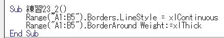

第14回.セルの書式を設定する（NumberFormatLocal,Font,Barders,Interior）
エクセルは表計算ソフトなので、計算が主体で、その計算結果こそが重要です。
とはいえ、その結果を表示する表の見栄えも重要な要素になります。
セルの書式を整えて見やすい表にしたいところです。
「セルの書式設定」ダイアログ画面
必ず、シートでの「セルの書式設定」ダイアログ画面と対で覚えるようにしましょう。
・配置
・フォント
・塗りつぶし
・保護
どんな設定が出来るか知らなければ、何も始まりません、マクロVBA以前の問題です。
「マクロの記録」で簡単に調べることが出来ますので、特に細部を覚える必要はありません。
とはいえ、良く使うものを含め、最低限の書き方は覚えておく必要はあります。
表示形式
A2セルを、平成○○年○○月○○日
A3セルを、パーセント、小数以下2桁、ゼロは0.00%
A4セルを、文字列
無用なトラブル回避のためにも、NumberFormatLocalを使ってください。
書式文字は、シートでの「セルの書式設定」の「ユーザー定義」とほぼ同様（違う場合もありますが）なので、これを参考にしてください。
フォント
A2セルを、文字色を赤色
A3セルを、太字
vbBlack、vbRed、vbGreen、vbYellow、vbBlue、vbMagenta、vbCyan、vbWhite
以上が用意されています。
RGB(red, green, blue)
red, green, blue、それぞれを0～255で指定します。
RGB(255, 0, 0) '赤
RGB(255, 255, 255) '白
RGB(0, 0, 0) '黒
罫線
LineStyle ・・・ 線の種類
Weight ・・・ 線の太さ
()を省略すると、上下左右に線を引きます。

BarderAround
これも使えますが、これはメソッドになり使い方が少々難しくなります。
塗りつぶし
A2セルを、赤(R):200、緑(G):80、青(B):120
vbBlack、vbRed、vbGreen、vbYellow、vbBlue、vbMagenta、vbCyan、vbWhite
これらが用意されています。
RGBは関数になります。
RGB(赤, 緑, 青)
赤,緑,青にそれぞれ0～255の数値を指定して色を表現します。
「セルの書式を設定する」のまとめ
・フォント
・罫線
・塗りつぶし
以上についてざっくりと説明しましたが、上記以外の詳細な書式設定方法は、
随時、「マクロの記録」を使い、必要なプロパティとその値を調べて使うようにしてください。
ExcelマクロVBA入門の対応ページ
第32回.セルの書式（配置,Alignment）
第33回.セルの書式（フォント,Font）
第34回.セルの書式（塗りつぶし,Interior）
第35回.セルの書式（罫線,Border）
同じテーマ「マクロVBA再入門」の記事
第11回.分からない事はエクセルに聞く（マクロの記録）
第12回.エクセルの言葉を理解する（オブジェクト、プロパティ、メソッド）
第13回.セルのコピペ方法を知る（CopyとPaste、さらに）
第14回.セルの書式を設定する（NumberFormatLocal,Font,Barders,Interior）
第15回.手作業で出来なければマクロは書けない
第16回.エクセルの機能を上手に使う
第17回.セルにブック・シートを指定する（Workbooks,Worksheets,With,Set）
第18回.シートをコピー・挿入・削除する（Worksheets,Copy,Add,Delete）
第19回.ブックを開く・閉じる・保存する（Workbooks,Open,Close,Save,SaveAs）
第20回.全てのシートに同じ事をする（For～Worksheets.Count）
第21回.ファイル一覧を取得する（Do～LoopとDir関数）
新着記事NEW ・・・新着記事一覧を見る
VBA100本ノック 100本目：WEBから100本ノックのリストを取得｜VBA練習問題（3月3日）
VBA100本ノック 99本目：自動席替え（行列と前後左右が全て違うように）｜VBA練習問題（3月2日）
VBA100本ノック 98本目：席替えルールが守られているか確認｜VBA練習問題（3月1日）
VBA100本ノック 97本目：Accessデータを取得（グループ集計）｜VBA練習問題（2月27日）
VBA100本ノック 96本目：Accessデータを取得（マスタ結合&抽出）｜VBA練習問題（2月26日）
VBA100本ノック 95本目：図形のテキストを検索するフォーム作成｜VBA練習問題（2月24日）
VBA100本ノック 94本目：表範囲からHTMLのtableタグを作成｜VBA練習問題（2月23日）
VBA100本ノック 93本目：複数ブックを連結して再分割｜VBA練習問題（2月22日）
VBA100本ノック 92本目：セルの色を16進で返す関数｜VBA練習問題（2月20日）
VBA100本ノック 91本目：時間計算（残業時間の月間合計）｜VBA練習問題（2月19日）
アクセスランキング ・・・ ランキング一覧を見る
1.最終行の取得（End,Rows.Count）｜VBA入門
2.RangeとCellsの使い方｜VBA入門
3.変数宣言のDimとデータ型｜VBA入門
4.マクロって何？VBAって何？｜VBA入門
5.Range以外の指定方法（Cells,Rows,Columns）｜VBA入門
6.セルのコピー&値の貼り付け（PasteSpecial）｜VBA入門
7.繰り返し処理（For Next)｜VBA入門
8.セルに文字を入れるとは（Range,Value）｜VBA入門
9.マクロはどこに書くの（VBEの起動）｜VBA入門
10.とにかく書いてみよう（Sub,End Sub）｜VBA入門
このサイトがお役に立ちましたら「シェア」「Bookmark」をお願いいたします。
記述には細心の注意をしたつもりですが、
間違いやご指摘がありましたら、「お問い合わせ」からお知らせいただけると幸いです。
掲載のVBAコードは動作を保証するものではなく、あくまでVBA学習のサンプルとして掲載しています。
掲載のVBAコードは自己責任でご使用ください。万一データ破損等の損害が発生しても責任は負いません。